SlimeUI
Thư viện UI cho script Roblox. Dễ dùng, có 9 theme, 818 icon, Key System và chạy tốt trên điện thoại. A UI library for Roblox scripts. Simple API, 9 themes, 818 icons, a built-in key system and a mobile layout.
local SlimeUI = loadstring(game:HttpGet("https://raw.githubusercontent.com/SlimexDev/SlimeUI/main/dist/SlimeUI.lua"))()Home
Quick toggles and camera
Giao diện đẹpPolished look
Cửa sổ trong suốt, hiệu ứng mượt cho mọi thao tác.Translucent windows and smooth animations on every control.
9 theme + Slime9 themes + Slime
Theme Slime có bong bóng, giọt slime và hiệu ứng nảy như thạch.The Slime theme adds bubbles, drips and jelly-bounce animations.
Dễ dùngEasy to use
Mỗi element viết một dòng, hoặc dùng bảng khi cần thêm tuỳ chọn.One line per element, or a table when you need more options.
Cho điện thoạiMobile ready
Bố cục gọn, nút nổi để bật/tắt, chạm và kéo đều mượt.Compact layout, floating toggle button and smooth touch input.
Cài đặtInstallation#
Chạy dòng sau trong executor để tải bản mới nhất từ GitHub:
Run this line in your executor to load the latest version from GitHub:
local SlimeUI = loadstring(game:HttpGet("https://raw.githubusercontent.com/SlimexDev/SlimeUI/main/dist/SlimeUI.lua"))()Hoặc dùng bản phát hành (release) mới nhất:
Or load the latest release:
local SlimeUI = loadstring(game:HttpGet("https://github.com/SlimexDev/SlimeUI/releases/latest/download/SlimeUI.lua"))()Yêu cầu executor: loadstring, game:HttpGet. Để hiện logo cần getcustomasset, isfile, writefile. Lưu key và config cần writefile, makefolder. Nút Get Key cần setclipboard. Thiếu hàm nào thì phần đó tự bỏ qua, UI vẫn chạy.
Executor requirements: loadstring and game:HttpGet. The logo needs getcustomasset, isfile and writefile. Saving keys and configs needs writefile and makefolder. The Get Key button needs setclipboard. Anything missing is skipped and the UI keeps working.
Bắt đầu nhanhQuick start#
Tạo cửa sổ, thêm tab, rồi thêm element vào tab. Element gọi trên tab sẽ vào section mới nhất.
Create a window, add a tab, then add elements to it. Elements added to a tab go into its latest section.
local SlimeUI = loadstring(game:HttpGet("https://raw.githubusercontent.com/SlimexDev/SlimeUI/main/dist/SlimeUI.lua"))()
local Window = SlimeUI:CreateWindow({
Title = "My Hub",
Subtitle = "by Me",
Theme = "Slime",
})
local Main = Window:Tab("Main", "home", "Everyday features")
Main:Section("Player")
Main:Toggle("Auto farm", false, function(on)
print("Auto farm:", on)
end)
Main:Slider("Walk speed", 16, 100, 16, function(value)
print("Speed:", value)
end)
Main:Button("Say hi", function()
Window:Notify("Hi", "Hello from SlimeUI", 3)
end)Bấm RightShift để ẩn hoặc hiện cửa sổ. Khi ẩn, cửa sổ thu gọn thành một thanh kính ở giữa phía trên màn hình, bấm vào để mở lại.
Press RightShift to hide or show the window. When hidden, it collapses into a glass bar at the top of the screen; click it to open the window again.
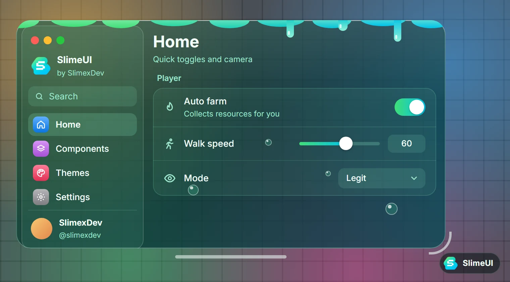
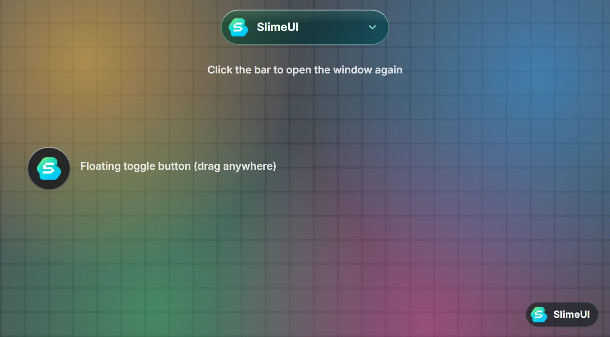
Tuỳ chọn cửa sổWindow options#
local Window = SlimeUI:CreateWindow({
Title = "SlimeUI",
Subtitle = "by SlimexDev",
Theme = "Glass",
Accent = "Blue",
ToggleKey = Enum.KeyCode.RightShift,
ToggleButton = true,
Island = true,
Resizable = true,
Size = Vector2.new(780, 500),
})| Tuỳ chọnOption | Mặc địnhDefault | Mô tảDescription |
|---|---|---|
Title | "SlimeUI" | Tên hiển thị ở sidebar, thanh trên và thông báo.Name shown in the sidebar, top bar and notifications. |
Subtitle | "by SlimexDev" | Dòng nhỏ dưới tên.Small line under the title. |
Theme | "Midnight" | Tên theme, xem phần Themes.Theme name, see Themes. |
Accent | màu của themetheme color | Màu nhấn: "Blue", "Slime", "Purple", "Pink", "Orange", "Green", "Teal", "Red", "Graphite" hoặc một Color3.Accent color: "Blue", "Slime", "Purple", "Pink", "Orange", "Green", "Teal", "Red", "Graphite" or any Color3. |
Logo | "SlimeUI/logo.png" | File trong workspace, rbxassetid://... hoặc tên icon.A workspace file, rbxassetid://... or an icon name. |
LogoUrl | logo trên GitHubGitHub logo | Link tải logo khi file chưa có trên máy.Where to download the logo when the file is missing. |
Folder | "SlimeUI" | Thư mục lưu key, config và logo.Folder for the key, configs and logo. |
Size | Vector2.new(780, 500) | Kích thước ban đầu (bố cục cột: 300, 470).Starting size (column layout: 300, 470). |
Opacity | 1 | Độ đặc của cửa sổ: 0 là kính trong suốt của theme, 1 là đặc hoàn toàn. Solid = false tương đương Opacity = 0.Window opacity: 0 is the theme's glass, 1 is fully solid. Solid = false is the same as Opacity = 0. |
Layout | "Sidebar" | "Column": cửa sổ hẹp dạng cột, dính cạnh trái màn hình, tab nằm trên thanh ngang, Settings ở nút bánh răng."Column": a narrow window docked to the left edge, tabs in a bar under the title, Settings behind the gear button. |
Dock | true | Chỉ cho bố cục cột. false để cửa sổ mở ở giữa màn hình.Column layout only. false opens the window in the middle of the screen. |
ToggleKey | RightShift | Phím ẩn/hiện UI. Nhận Enum.KeyCode hoặc tên phím.Key that hides or shows the UI. Takes an Enum.KeyCode or a key name. |
ToggleButton | true | Nút tròn nổi để bật/tắt UI, kéo thả được.Draggable round button that toggles the UI. |
Island | true | Khi ẩn, UI thu gọn thành thanh kính ở giữa phía trên.When hidden, the UI collapses into a glass bar at the top. |
Resizable | true | Kéo vòng cung ở góc (hoặc bất kỳ góc nào) để đổi kích thước. Thanh ngang dưới cửa sổ luôn dùng để di chuyển.Drag the corner arc (or any corner) to resize. The bar under the window always moves it. |
Blur | false | Làm mờ thế giới game phía sau khi UI mở.Blur the game world while the UI is open. |
Compact | tự độngauto | Bố cục gọn cho điện thoại. Tự bật trên màn hình nhỏ hoặc thiết bị cảm ứng.Compact phone layout. Turns on automatically on small or touch screens. |
Loader | true | Màn hình khởi động có logo.Splash screen with the logo. |
SettingsTab | true | Thêm tab Settings (theme, màu nhấn, phím tắt, config).Adds a Settings tab (theme, accent, shortcut, configs). |
KeySystem | nil | Bật hệ thống key, xem Key System.Turns on the key system, see Key System. |
Hàm của WindowWindow methods#
| HàmMethod | Tác dụngWhat it does |
|---|---|
Window:Tab(name, icon, description) | Tạo tab mới (cũng nhận một bảng).Creates a tab (also accepts a table). |
Window:SelectTab(tab or name) | Chuyển sang tab.Switches to a tab. |
Window:Notify(...) | Hiện thông báo, xem Thông báo.Shows a notification, see Notifications. |
Window:Toggle() | Ẩn hoặc hiện UI.Hides or shows the UI. |
Window:SetVisible(bool) | Ẩn hoặc hiện UI theo giá trị.Hides or shows the UI explicitly. |
Window:Minimize([bool]) | Thu gọn còn thanh tiêu đề (nút vàng).Shrinks to the title bar (yellow button). |
Window:Zoom([bool]) | Phóng to (nút xanh).Enlarges the window (green button). |
Window:SetTheme(name) | Đổi theme ngay lập tức.Changes the theme instantly. |
Window:SetAccent(name or Color3) | Đổi màu nhấn. Truyền "Theme" để về màu của theme.Changes the accent. Pass "Theme" to go back to the theme color. |
Window:SetOpacity(number) | Đổi độ đặc từ 0 (kính) đến 1 (đặc). Window:SetSolid(bool) là lối tắt.Sets the opacity from 0 (glass) to 1 (solid). Window:SetSolid(bool) is a shortcut. |
Window:SetBlur(bool) | Bật/tắt làm mờ nền game.Turns background blur on or off. |
Window:SetScale(number) | Cỡ UI, ví dụ 0.9.UI scale, for example 0.9. |
Window:SetToggleButton(bool) | Hiện/ẩn nút nổi.Shows or hides the floating button. |
Window:SaveConfig(name) | Lưu giá trị các element có Flag.Saves every element that has a Flag. |
Window:LoadConfig(name) | Tải lại config đã lưu.Loads a saved config. |
Window:Destroy() | Gỡ toàn bộ UI.Removes the whole UI. |
Tab và SectionTabs and sections#
Tham số thứ hai là tên icon (xem Icons), tham số thứ ba là mô tả hiện dưới tiêu đề.
The second argument is an icon name (see Icons); the third is a description shown under the title.
local Combat = Window:Tab("Combat", "swords", "Aim and targets")
-- or with a table
local Combat = Window:Tab({
Name = "Combat",
Icon = "swords",
Description = "Aim and targets",
Color = Color3.fromRGB(255, 55, 95),
})
Combat:Section("Aim") -- next elements go here
Combat:Toggle("Enabled", false, function(on) end)
local Targets = Combat:Section("Targets") -- keep a section to add to it later
Targets:Dropdown("Part", { "Head", "Torso" }, "Head", function(v) end)Toggle#
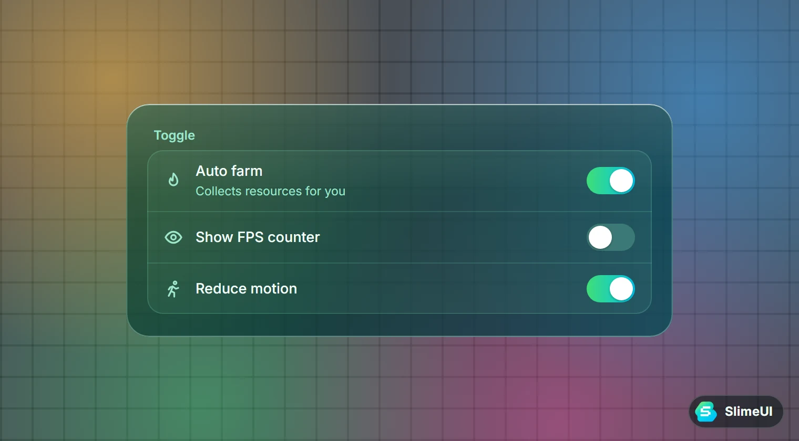
Mọi element đều nhận cách viết ngắn hoặc một bảng. Trong bảng có thể thêm Description (dòng phụ), Icon (icon bên trái) và Flag (để lưu config).
Every element accepts a short form or a table. Tables also take Description (second line), Icon (left icon) and Flag (for configs).
local toggle = Tab:Toggle("Auto farm", false, function(on) end)
Tab:Toggle({
Name = "Auto farm",
Description = "Collects resources for you",
Icon = "flame",
Default = false,
Flag = "AutoFarm",
Callback = function(on) end,
})
toggle:Set(true) -- change it from code
print(toggle.Value) -- read the current valueSlider#
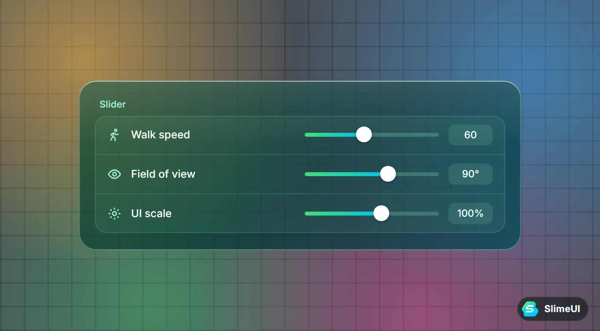
-- name, min, max, default, callback
local slider = Tab:Slider("Walk speed", 16, 100, 16, function(v) end)
Tab:Slider({
Name = "Volume",
Min = 0, Max = 1,
Increment = 0.05,
Default = 0.5,
Suffix = "",
Flag = "Volume",
Callback = function(v) end,
})
slider:Set(50)Bấm vào ô số bên phải slider để gõ giá trị trực tiếp.
Click the number box next to the slider to type a value.
Button#
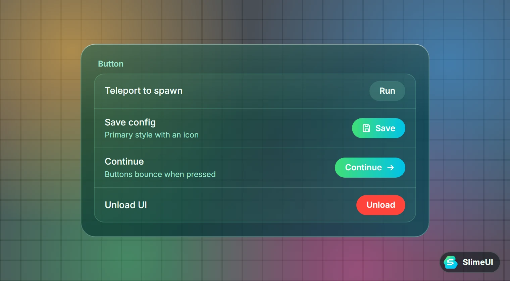
local btn = Tab:Button("Teleport", function() end)
Tab:Button({
Name = "Save",
ButtonText = "Save",
ButtonIcon = "save",
Style = "Primary", -- "Default", "Primary" or "Danger"
Callback = function() end,
})
btn:SetText("Running...")Dropdown#
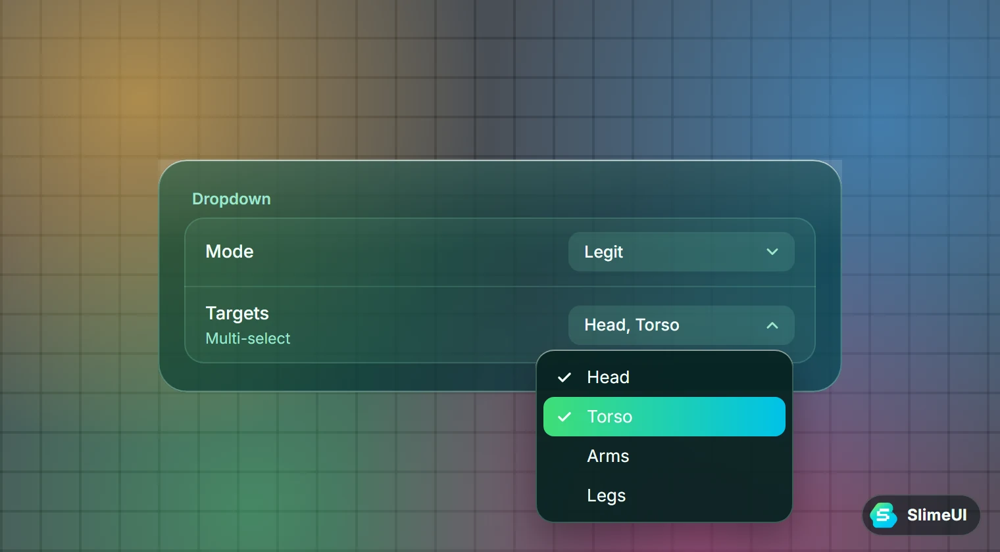
local dropdown = Tab:Dropdown("Mode", { "Legit", "Rage" }, "Legit", function(v) end)
Tab:Dropdown({
Name = "Targets",
Multi = true, -- pick several options
Options = { "Head", "Torso", "Legs" },
Default = { "Head" },
Flag = "Targets",
Callback = function(list) end,
})
dropdown:Set("Rage")
dropdown:Refresh({ "A", "B", "C" }) -- replace the optionsSegmented#
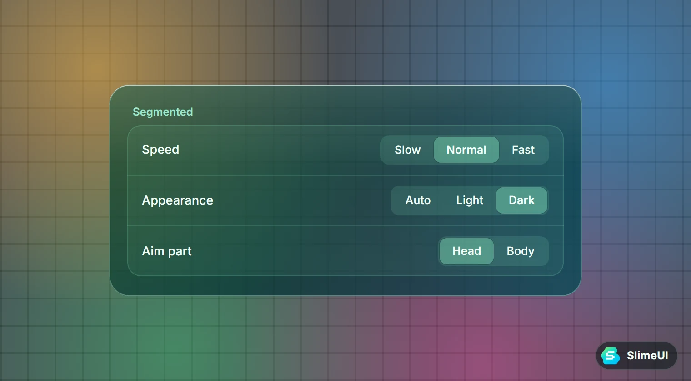
Một hàng nút liền nhau, chọn một trong vài lựa chọn ngắn.
A row of joined buttons for picking one of a few short options.
Tab:Segmented("Speed", { "Slow", "Normal", "Fast" }, "Normal", function(v) end)Keybind#
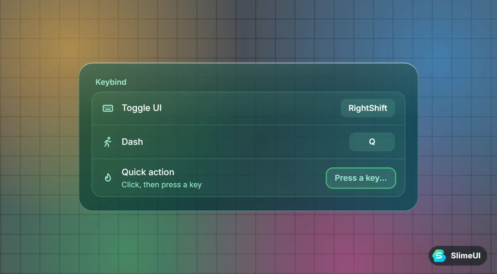
Tab:Keybind("Quick action", Enum.KeyCode.F, function()
print("pressed")
end)
Tab:Keybind({
Name = "Dash",
Default = "Q",
Flag = "DashKey",
Callback = function() end, -- runs when the key is pressed
Changed = function(key) end, -- runs when the user picks a new key
})Bấm vào ô phím rồi nhấn phím mới để đổi. Esc để huỷ, Backspace để xoá.
Click the key box and press a new key. Esc cancels, Backspace clears it.
Input#
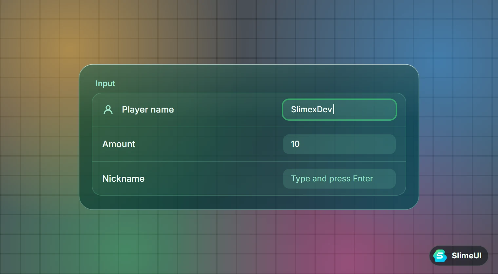
Tab:Input("Player name", "Type a name", function(text, enterPressed) end)
Tab:Input({
Name = "Amount",
Numeric = true,
Default = "10",
Flag = "Amount",
Callback = function(text) end,
})Label & Paragraph#
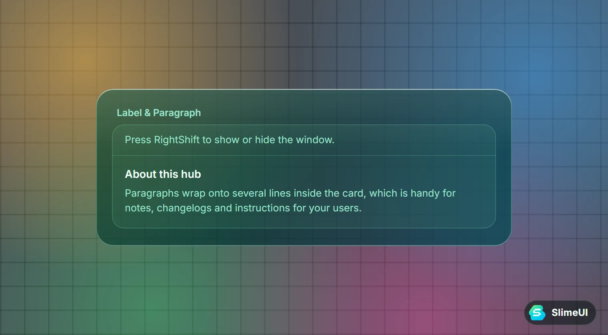
local label = Tab:Label("A simple line of text")
label:Set("New text")
local paragraph = Tab:Paragraph("Title", "Longer text that wraps inside the card.")
paragraph:Set("New title", "New content")Thông báoNotifications#
Window:Notify("Title", "Content", 4)
Window:Notify({
Title = "Saved",
Content = "Your config was saved",
Type = "Success", -- "Info", "Success", "Warning", "Error"
Duration = 3,
})
Window:Notify({ Title = "Custom", Content = "With an icon", Icon = "rocket", Color = Color3.fromRGB(191, 90, 242) })Thông báo trượt vào ở góc trên bên phải, có thanh đếm thời gian. Bấm vào để đóng sớm.
Notifications slide in at the top right with a countdown bar. Click one to close it early.
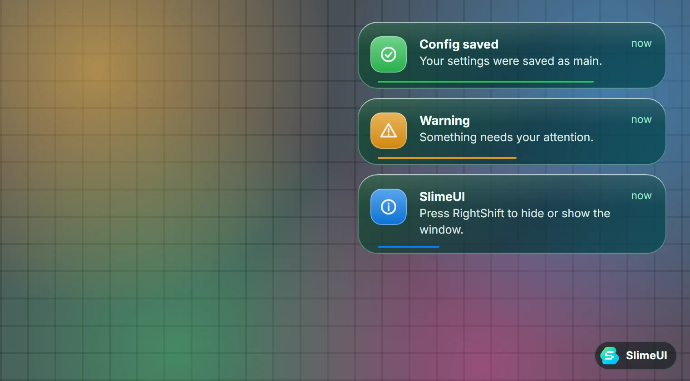
Key System#
Thêm KeySystem vào CreateWindow. Cửa sổ chính chỉ hiện sau khi người dùng nhập đúng key.
Add KeySystem to CreateWindow. The main window only appears after a valid key is entered.
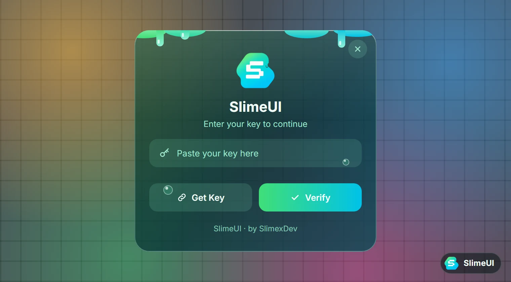
local Window = SlimeUI:CreateWindow({
Title = "My Hub",
KeySystem = {
Key = { "KEY-1", "KEY-2" }, -- accepted keys
Link = "https://your-key-link", -- copied by the Get Key button
SaveKey = true, -- remember the key next time
},
})Muốn kiểm tra key bằng server riêng thì dùng Validate thay cho Key. Hàm trả về true nếu đúng, hoặc false kèm lời nhắn.
To check keys on your own server, use Validate instead of Key. Return true for a valid key, or false and a message.
KeySystem = {
Link = "https://your-key-link",
Validate = function(key)
local ok = game:HttpGet("https://your-api/check?key=" .. key) == "true"
return ok, "Wrong or expired key."
end,
}Dùng key serverKey server
Có server key riêng thì chỉ cần khai báo Api. SlimeUI tự gọi GET <Api>/verify?key=...&hwid=... và đọc kết quả JSON { "valid": true, "message": "...", "tier": "premium", "expiresAt": 1765000000, "remaining": 86400 }. HWID lấy từ gethwid() nếu executor có, nếu không thì dùng RbxAnalyticsService:GetClientId(). Muốn tự lấy HWID hoặc đổi thời gian chờ server (mặc định 10 giây) thì truyền bảng { Url = ..., Hwid = function() ... end, Timeout = 10 }.
If you run your own key server, set Api. SlimeUI calls GET <Api>/verify?key=...&hwid=... and reads the JSON reply { "valid": true, "message": "...", "tier": "premium", "expiresAt": 1765000000, "remaining": 86400 }. The HWID comes from gethwid() when the executor has it, otherwise from RbxAnalyticsService:GetClientId(). To supply your own HWID or change how long to wait for the server (10 seconds by default), pass a table { Url = ..., Hwid = function() ... end, Timeout = 10 }.
local ok, info = SlimeUI:KeySystem({
Title = "My Hub",
Api = "https://your-worker.workers.dev/api",
Link = "https://your-worker.workers.dev", -- Get Key button
Discord = "https://discord.gg/your-invite", -- optional Discord button
Premium = "https://your-site/premium", -- optional Premium button
})
if not ok then return end
print(info.Tier, info.Remaining) -- "premium", seconds left (nil = lifetime)Sau khi xác minh, dòng trạng thái hiện loại key và thời gian còn lại (ví dụ Free · 23h 12m left). KeySystem trả về true kèm bảng { Key, Tier, ExpiresAt, Remaining }; bảng này cũng được lưu ở SlimeUI.KeyInfo, kể cả khi bạn dùng KeySystem bên trong CreateWindow. Nếu key đã lưu hết hạn hoặc bị khoá sang máy khác, cửa sổ key sẽ hiện lý do. Nhập sai 3 lần liên tiếp thì nút Verify bị khoá 5 giây. Validate vẫn được ưu tiên hơn Api nếu khai báo cả hai.
After a successful check the status line shows the key type and time left (for example Free · 23h 12m left). KeySystem returns true plus a table { Key, Tier, ExpiresAt, Remaining }; the same table is stored in SlimeUI.KeyInfo, also when the key system runs inside CreateWindow. If the saved key has expired or is locked to another device, the key window shows why. Three wrong keys in a row lock the Verify button for 5 seconds. Validate still wins over Api if you set both.
Tuỳ chọn khác: Title, Subtitle, Note, Placeholder, FileName (mặc định SlimeUI/key.txt), Discord và Premium (thêm hàng nút copy link). Nếu người dùng đóng cửa sổ key, CreateWindow trả về một đối tượng rỗng nên code phía sau không bị lỗi.
Other options: Title, Subtitle, Note, Placeholder, FileName (default SlimeUI/key.txt), Discord and Premium (add a row of copy-link buttons). If the user closes the key window, CreateWindow returns an empty object, so the rest of your script does not error.
Hiện trạng thái keyKey status
Tab:KeyStatus() thêm các dòng thông tin key vào tab: loại key, trạng thái (Active, Expiring soon, Expired), thời gian còn lại (tự cập nhật mỗi 30 giây), giờ hết hạn, key đã che phần giữa và nút Copy Key. Khi key còn dưới 10 phút và khi hết hạn sẽ có thông báo. Mặc định đọc SlimeUI.KeyInfo; truyền Info nếu thông tin key đến từ nơi khác (ví dụ server chèn vào script).
Tab:KeyStatus() adds key info rows to a tab: key type, status (Active, Expiring soon, Expired), time left (refreshed every 30 seconds), expiry time, the key with its middle hidden, and a Copy Key button. It notifies the user when 10 minutes are left and when the key expires. It reads SlimeUI.KeyInfo by default; pass Info when the key info comes from somewhere else (for example a value your server injects into the script).
Home:Section("Key Status")
local status = Home:KeyStatus() -- uses SlimeUI.KeyInfo
-- or with your own info table
Home:KeyStatus({
Info = { Key = "SLIME-...", Tier = "free", ExpiresAt = 1765000000 },
ShowKey = true, -- show the masked key (default true)
CopyButton = true, -- show the Copy Key button (default true)
Notify = true, -- warn when it is about to expire (default true)
})
print(status.TimeLeft()) -- seconds left, nil for a lifetime key
status.Refresh() -- update the rows nowKhông có thông tin key thì chỉ hiện một dòng "No key info" (đổi chữ bằng EmptyText).
With no key info it shows a single "No key info" line (change it with EmptyText).
Themes#
SlimeUI có 9 theme. Bấm vào một theme để xem trước ở khung phía trên. Đổi theme lúc tạo cửa sổ, bằng code, hoặc trong tab Settings.
SlimeUI ships with 9 themes. Click one to preview it in the window at the top. Pick a theme when creating the window, from code, or in the Settings tab.
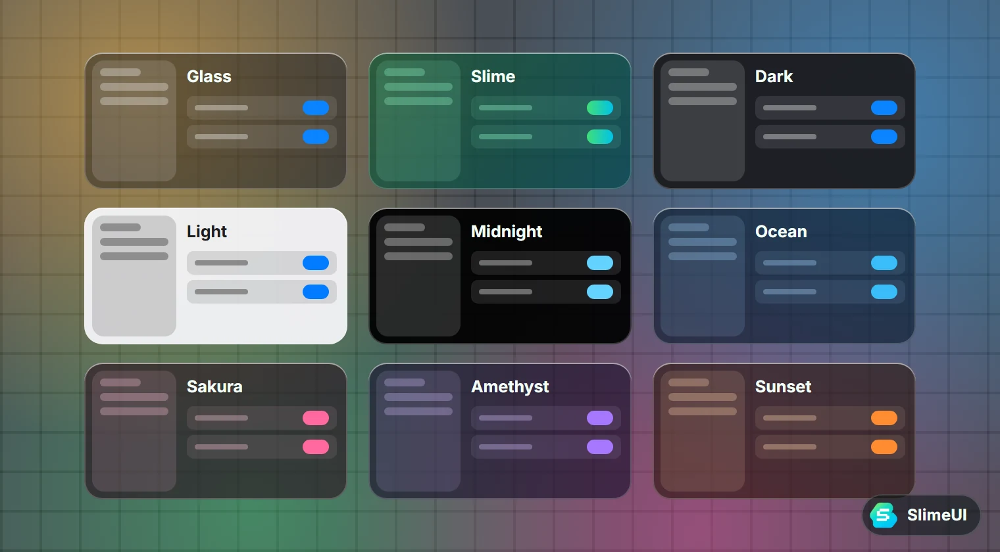
SlimeUI:CreateWindow({ Theme = "Slime" })
Window:SetTheme("Ocean")
Window:SetAccent("Pink") -- or Window:SetAccent("Theme") to reset
print(table.concat(SlimeUI:GetThemes(), ", "))Theme Slime là theme đặc biệt: kính chuyển màu xanh lá sang xanh ngọc giống logo, một lớp slime gợn sóng ở mép trên với giọt chảy xuống và thỉnh thoảng rơi, bong bóng bóng loáng nổi lên, nút và công tắc dùng màu chuyển, cửa sổ mở ra và công tắc bật tắt đều nảy như thạch.
The Slime theme is special: green-to-cyan glass that matches the logo, a wavy slime coat on the top edge with drips that fall now and then, glossy rising bubbles, gradient buttons and switches, and a jelly bounce when the window opens or a switch flips.
Tự tạo themeCustom themes#
Gọi SlimeUI:AddTheme trước khi tạo cửa sổ. Khoá nào không khai báo sẽ lấy từ theme Glass.
Call SlimeUI:AddTheme before creating the window. Any key you leave out is taken from the Glass theme.
SlimeUI:AddTheme("Lava", {
Window = Color3.fromRGB(40, 8, 4),
WindowT = 0.45, -- window transparency
Text = Color3.fromRGB(255, 244, 236),
SubText = Color3.fromRGB(240, 180, 150),
Accent = Color3.fromRGB(255, 80, 20),
Effect = nil, -- "Slime" turns on the slime effects
})
local Window = SlimeUI:CreateWindow({ Theme = "Lava" })| KhoáKeys | Dùng choUsed for |
|---|---|
Window, WindowT | Màu và độ trong suốt của cửa sổ, thanh trên, thông báo.Color and transparency of the window, top bar and notifications. |
Sidebar, Card, Hover, Line (+T) | Sidebar, thẻ chứa element, nền khi rê chuột, đường kẻ.Sidebar, element cards, hover background, separators. |
Edge, EdgeA, EdgeB, Rim | Viền kính: màu, độ sáng hai đầu, viền trong.Glass edge color, brightness at each end, inner rim. |
Sheen, Band | Ánh sáng phía trên và dải sáng chéo (1 = tắt).Top sheen and diagonal light band (1 = off). |
Text, SubText | Chữ chính và chữ phụ.Main and secondary text. |
Control, Field, Select, SegPill, Menu (+T) | Công tắc tắt, ô nhập, tab đang chọn, segmented, menu dropdown.Off switches, input fields, selected tab, segmented pill, dropdown menu. |
Knob, Accent | Núm công tắc/slider và màu nhấn.Switch and slider knobs, and the accent color. |
Accent2 | Màu thứ hai (không bắt buộc). Có thì nút Primary, công tắc và slider dùng màu chuyển Accent → Accent2.Optional second color. When set, primary buttons, switches and sliders use an Accent → Accent2 gradient. |
Effect | Hiệu ứng đặc biệt. Hiện có "Slime".Special effect. Currently "Slime". |
Các khoá kết thúc bằng T là độ trong suốt từ 0 (đặc) đến 1 (trong hẳn).
Keys ending in T are transparency values from 0 (solid) to 1 (invisible).
Flag và configFlags and configs#
Element có Flag sẽ lưu giá trị vào SlimeUI.Flags và được ghi khi lưu config. Tab Settings có sẵn ô tên config cùng nút Save và Load.
Elements with a Flag keep their value in SlimeUI.Flags and are written when you save a config. The Settings tab already has a config name box with Save and Load buttons.
Tab:Toggle({ Name = "Auto farm", Flag = "AutoFarm" })
print(SlimeUI.Flags.AutoFarm)
Window:SaveConfig("main") -- writes SlimeUI/configs/main.json
Window:LoadConfig("main")Icons#
SlimeUI có sẵn 818 icon Lucide. Dùng tên icon ở bất cứ đâu nhận Icon, ví dụ "home", "settings", "swords", "eye", "bell", "rocket", "shield", "user", "map-pin", "crosshair". Cũng nhận rbxassetid://... hoặc số asset id.
SlimeUI bundles 818 Lucide icons. Use the icon name anywhere an Icon is accepted, for example "home", "settings", "swords", "eye", "bell", "rocket", "shield", "user", "map-pin", "crosshair". It also accepts rbxassetid://... or a numeric asset id.
print(SlimeUI:GetIcon("home")) -- rbxassetid://...Trên điện thoạiMobile#
- Bố cục gọn tự bật trên màn hình nhỏ hoặc thiết bị cảm ứng: sidebar chỉ còn icon, ô tìm kiếm lên header, nút và hàng to hơn cho dễ chạm.
- Nút nổi có logo dùng để mở/đóng UI và kéo thả được.
- Kéo slider sẽ không làm cuộn trang. Có thể kéo góc cửa sổ bằng ngón tay.
- Ép bật hoặc tắt bằng
Compact = truehoặcCompact = false.
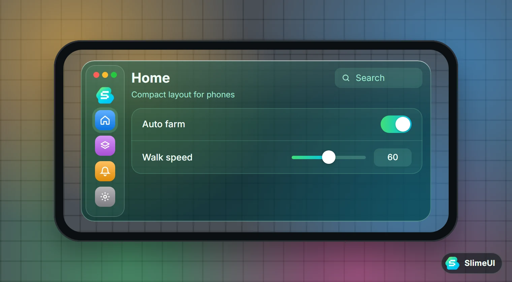
- The compact layout turns on automatically on small or touch screens: icon-only sidebar, search in the header, larger rows and buttons.
- The floating logo button opens and closes the UI and can be dragged anywhere.
- Dragging a slider does not scroll the page, and window corners can be resized with a finger.
- Force it with
Compact = trueorCompact = false.
Build từ sourceBuild from source#
Mã nguồn chia thành module trong thư mục src/. Script build ghép chúng (theo src/order.txt) thành một file dist/SlimeUI.lua. Cần Python 3.
The source is split into modules in src/. The build script joins them (in the order of src/order.txt) into one file, dist/SlimeUI.lua. Requires Python 3.
python build/build.pysrc/
Core.lua library table, services, constants
Icons.lua Lucide icon ids
Themes.lua built-in themes
Util.lua helpers (instances, tweens, images)
ThemeEngine.lua live theme switching, glass edges
KeySystem.lua key window
Window.lua window, tabs, elements, settings
Init.lua AddTheme, GetThemes, Notify
order.txt build orderKhi phát triển, chép cả repo vào workspace/SlimeUI của executor và chạy thẳng từ src/ không cần build:
While developing, copy the repo into your executor's workspace/SlimeUI and run straight from src/ without building:
local SlimeUI = loadstring(readfile("SlimeUI/dev.lua"))("SlimeUI")Đăng tài liệu này lên GitHub PagesPublish these docs on GitHub Pages
- Push repo lên GitHub.
- Mở Settings → Pages.
- Chọn Deploy from a branch, nhánh
main, thư mục/docs, rồi bấm Save. - Khoảng một phút sau, trang có ở
https://<tên-github>.github.io/SlimeUI/.
- Push the repository to GitHub.
- Open Settings → Pages.
- Choose Deploy from a branch, branch
main, folder/docs, then save. - About a minute later the site is live at
https://<username>.github.io/SlimeUI/.
Giấy phép và ghi côngLicense & credits#
- SlimeUI phát hành theo giấy phép MIT.SlimeUI is released under the MIT License.
- Thiết kế và code:Design and code: SlimexDev
- Icon:Icons: Lucide (ISC); bảng asset id lấy từasset ID table from Fluent (MIT)
- Cấu trúc dự án tham khảoProject layout inspired by WindUI